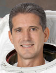

Lyndon B. Johnson Space Center
Houston, Texas 77058
|
National Aeronautics and Space Administration Lyndon B. Johnson Space Center Houston, Texas 77058 |
 |
Biographical Data |
||
Michael T. Good (Colonel, USAF, RET.)
NASA Astronaut
PERSONAL DATA: Born in Parma, Ohio, but considers Broadview Heights, Ohio, his hometown. Married to the former Joan Dickinson. They have three children: Bryan, Jason and Shannon and two grandsons: Gavin and Braxton.
EDUCATION: Graduated from Brecksville-Broadview Heights High School, Ohio, 1980; Bachelor of Science in Aerospace Engineering, University of Notre Dame, 1984; Master of Science in Aerospace Engineering, University of Notre Dame, 1986.
ORGANIZATIONS: Sigma Gamma Tau, National Honor Society for Aerospace Engineering.
SPECIAL HONORS/AWARDS: Distinguished Graduate from the University of Notre Dame, Reserve Officer Training Corps, 1984; Lead In Fighter Training, 1989; Squadron Officer School, 1993; Top Academic Graduate of Specialized Undergraduate Navigator Training, 1989; F 111 Replacement Training Unit, 1989; USAF Test Pilot School, 1994; Aircrew of the Year, 77th Fighter Squadron, 1991. Military decorations include the Legion of Merit, Meritorious Service Medal (four), Aerial Achievement Medal (two), Air Force Commendation Medal, Air Force Achievement Medal, Combat Readiness Medal and various other service awards.
EXPERIENCE: Commissioned as second lieutenant in the U.S. Air Force 1984, Good completed his graduate degree and was assigned to the Tactical Air Warfare Center where he served as a flight test engineer for the Ground Launched Cruise Missile program. He was selected to attend Undergraduate Navigator Training, receiving his wings in January 1989. After Lead-In Fighter Training and F-111transition training, Good was assigned to the 20th Fighter Wing, RAF Upper Heyford, England. He served as an F-111 instructor weapon systems officer. In 1993, he was selected for USAF Test Pilot School, graduating in 1994. After graduation, he was assigned to the 420th Flight Test Squadron, where he flew and tested the B 2 Stealth Bomber. In 1997, he attended Air Command and Staff College. After graduation, he was assigned to the 46th Operations Support Squadron where he served as operations officer and F-15 test weapon systems officer. In October 2009, Good retired from the Air Force and transitioned to government civil service. He has logged over 3,000 hours in more than 30 different aircraft.
NASA EXPERIENCE: Selected as a mission specialist by NASA in July 2000, Good reported for training at Johnson Space Center (JSC). Following 2 years of training and evaluation, he was assigned technical duties in the Advanced Vehicles Branch and the Space Shuttle Branch. After completing two Space Shuttle missions, he served as NASA Liaison to Air Force Space Command in Colorado. Good is currently back at JSC serving in the Commercial Crew Program.
SPACE FLIGHT EXPERIENCE: STS-125 Atlantis (May 11 to May 24, 2009) was the fifth and final Hubble servicing mission. The 19-year-old telescope spent 6 days in the shuttle cargo bay undergoing an overhaul. Good logged 15 hours and 58 minutes of EVA during two of the five spacewalks conducted. The refurbished Hubble Space Telescope now has four new or rejuvenated scientific instruments, new batteries, new gyroscopes, new outer blankets and a new computer. The STS-125 mission was accomplished in 12 days, 21 hours, 37 minutes and 09 seconds, traveling 5,276,000 miles in 197 Earth orbits.
STS-132 Atlantis (May 14 to May 26, 2010) delivered an Integrated Cargo Carrier and a Russian-built Mini Research Module to the International Space Station. During 7 days of docked operations, three spacewalks were conducted, and Good logged 13 hours and 55 minutes of EVA in two spacewalks. On the second spacewalk, Bowen and Good replaced batteries on the P6 truss that stores solar energy. On the final spacewalk, Good and Reisman replaced the last of the P6 Truss batteries and retrieved a power data grapple fixture for installation at a later date. The STS-132 mission was completed in 186 orbits, traveling 4,879,978 miles in 11 days, 18 hours, 28 minutes and 2 seconds.
OCTOBER 2014